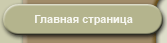

|  |
 |
 |
 |
 |
Древо рода
Ларошфуко — древняя аристократическая фамилия. Этот род ведет свое начало с XI века, от Фуко I сеньора де Лароша, чьи потомки до сих пор живут в фамильном замке Ларошфуко недалеко от Ангулема. Старшие сыновья в этом роду издревле служили советниками французских королей. Многие носившие эту фамилию вошли в историю. Франсуа I Ларошфуко был крестным французского короля Франциска I. Франсуа III — одним из лидеров гугенотов. Франсуа XII стал учредителем Французского сберегательного банка и другом великого американского ученого-естествоиспытателя Бенджамина Франклина. Наш герой был шестым в роду Ларошфуко. Франсуа VI герцог де Ларошфуко, принц Марсийяк, маркиз де Гершевиль, граф де Ларошгийон, барон де Вертей, Монтиньяк и Каюзак родился 15 сентября 1613 года в Париже. Его отец, Франсуа V граф де Ларошфуко, главный гардеробмейстер королевы Марии Медичи, был женат на не менее именитой Габриэли дю Плесси-Лианкур. Вскоре после рождения Франсуа мать увезла его в имение Вертей в Ангумуа, где он и провел свое детство. Отец же остался делать карьеру при дворе и, как выяснилось, не напрасно. Вскоре королева пожаловала ему пост генерал-лейтенанта провинции Пуату и 45 тысяч ливров дохода. Получив эту должность, он стал усердно бороться с протестантами. Тем более усердно, что его отец и дед не были католиками. Франсуа III, один из руководителей гугенотов, погиб в Варфоломеевскую ночь, а Франсуа IV был убит членами Католической лиги в 1591-м. Франсуа V же принял католичество, и в 1620 году за успешную борьбу с протестантами ему был пожалован титул герцога. Правда, до того времени, пока парламент не утвердил патент, он был так называемым «временным герцогом» — герцогом по королевской грамоте. Но и тогда герцогское великолепие уже требовало больших расходов. Денег он тратил так много, что его жене вскоре пришлось потребовать раздельной собственности.
Воспитанием детей — у Франсуа было четыре брата и семь сестер — занималась мать, герцог же в дни своих кратких приездов посвящал их в тайны придворной жизни. Старшему сыну он с младых ногтей внушал чувство дворянской чести, а также феодальной верности дому Конде. Вассальная связь Ларошфуко с этой ветвью королевского дома сохранилась с тех времен, когда и те и другие были гугенотами.
Образование Марсийяка, обычное для дворянина того времени, включало в себя грамматику, математику, латынь, танцы, фехтование, геральдику, этикет и множество других дисциплин. Юный Марсийяк относился к учебе, как и большинство мальчишек, но зато был крайне неравнодушен к романам. Начало XVII века было временем огромной популярности этого литературного жанра — рыцарские, авантюрные, пасторальные романы выходили во множестве. Их герои — то доблестные воины, то безупречные поклонники — служили тогда идеалами для знатных молодых людей.
Когда Франсуа исполнилось четырнадцать лет, отец принял решение женить его на Андре де Вивонн — второй дочери и наследнице (ее сестра рано умерла) бывшего главного сокольничего Андре де Вивонна.
Опальный полковник
В том же году Франсуа получил чин полковника в Овернском полку и в 1629 году принял участие в Итальянских походах — военных операциях на севере Италии, которые Франция проводила в рамках Тридцатилетней войны. Вернувшись в Париж в 1631 году, он нашел двор сильно изменившимся. После «Дня одураченных» в ноябре 1630 года, когда королева-мать Мария Медичи, требовавшая отставки Ришелье и уже праздновавшая победу, вскоре была вынуждена бежать, многие ее приверженцы, в том числе и герцог де Ларошфуко, разделили с ней опалу. Герцог был отстранен от управления провинцией Пуату и сослан в свой дом около Блуа. Самому же Франсуа, который как старший сын герцога носил титул принца Марсийяка, было разрешено остаться при дворе. Многие современники упрекали его в заносчивости, поскольку титул принца во Франции полагался лишь принцам крови и иностранным принцам.
В Париже Марсийяк стал посещать модный салон мадам Рамбуйе. В ее знаменитой «Голубой гостиной» собирались влиятельные политики, писатели и поэты, аристократы. Туда заглядывал Ришелье, приходили Поль де Гонди, будущий кардинал де Рец, и будущий маршал Франции граф де Гиш, принцесса Конде со своими детьми — герцогом Энгиенским, который вскоре станет Великим Конде, герцогиней де Лонгвиль, тогда еще мадемуазель де Бурбон, и принцем Конти, и многие другие. Салон был центром галантной культуры — здесь обсуждались все новинки литературы и велись беседы о природе любви. Быть завсегдатаем этого салона означало принадлежать к самому изысканному обществу. Здесь витал дух любимых Марсийяком романов, здесь стремились подражать их героям.
Унаследовав от отца ненависть к кардиналу Ришелье, Марсийяк стал служить Анне Австрийской. Прекрасная, но несчастная королева как нельзя лучше соответствовала образу из романа. Марсийяк стал ее верным рыцарем, равно как и другом ее фрейлины мадемуазель Д'Отфор и знаменитой герцогини де Шеврез.
Весной 1635 года принц по собственному почину отправился во Фландрию сражаться с испанцами. А по возвращении узнал, что ему и еще нескольким офицерам не позволено остаться при дворе. В качестве причины указывались их неодобрительные отзывы о французской военной кампании 1635 года. Год спустя Испания напала на Францию и Марсийяк вновь отправился в армию. После успешного окончания кампании он ожидал, что теперь ему будет позволено вернуться в Париж, но его надеждам не суждено было оправдаться: «...Я был вынужден уехать к отцу, жившему у себя в поместье и все еще находившемуся в строгой опале». Но, невзирая на запрет появляться в столице, он перед отъездом в имение тайно нанес прощальный визит королеве. Анна Австрийская, которой король запретил даже переписываться с мадам де Шеврез, передала ему письмо для опальной герцогини, которое Марсийяк отвез в Турень, место ее ссылки.
Наконец, в 1637 году отцу и сыну разрешили вернуться в Париж. Парламент утвердил герцогский патент, и они должны были прибыть для завершения всех формальностей и принесения присяги. Их возвращение совпало с разгаром скандала в королевской семье. В августе этого года в монастыре Валь-де-Грас было найдено оставленное королевой письмо к брату— королю Испании, с которым Людовик XIII все еще вел войну. Мать-настоятельница под угрозой отлучения от церкви рассказала так много об отношениях королевы с враждебным испанским двором, что король решился на неслыханную меру — Анну Австрийскую подвергли обыску и допросу. Она была обвинена в государственной измене и тайной переписке с испанским послом маркизом Мирабелем. Король даже собирался воспользоваться этой ситуацией, чтобы развестись со своей бездетной супругой (будущий Людовик XIV родился спустя год после этих событий в сентябре 1638 года) и заточить ее в Гавре. Дело зашло так далеко, что возникла мысль о побеге. По словам Марсийяка, все было уже готово к тому, чтобы он тайно увез королеву и мадемуазель Д'Отфор в Брюссель. Но обвинения были сняты и столь скандальный побег не состоялся. Тогда принц вызвался оповестить обо всем происшедшем герцогиню де Шеврез. Однако за ним следили, поэтому родные категорически запретили ему видеться с ней. Чтобы выйти из положения, Марсийяк попросил англичанина графа Крафта, их общего знакомого, передать герцогине, чтобы она отправила к принцу верного человека, которого можно было бы обо всем оповестить. Дело шло к счастливому завершению, и Марсийяк отбыл в имение к жене.
Между мадемуазель Д`Отфор и герцогиней де Шеврез существовала договоренность о срочной системе оповещения. Ларошфуко упоминает о двух часословах — в зеленом и красном переплетах. Один из них означал, что дела идут к лучшему, другой был сигналом опасности. Неизвестно, кто перепутал символику, но, получив часослов, герцогиня де Шеврез, посчитав, что все пропало, решилась бежать в Испанию и в спешке покинула страну. Проезжая мимо Вертея, родового поместья Ларошфуко, она попросила принца о помощи. Но он, уже во второй раз прислушавшись к голосу благоразумия, ограничился лишь тем, что дал ей свежих лошадей и людей, сопроводивших ее до границы. Но когда об этом стало известно в Париже, Марсийяк был вызван на допрос и вскоре препровожден в тюрьму. В Бастилии благодаря ходатайствам родителей и друзей он пробыл всего неделю. А после освобождения он вынужден был вернуться в Вертей. В ссылке Марсийяк много часов провел за трудами историков и философов, пополняя свое образование.
В 1639 году началась война и принцу было дозволено отправиться в армию. Он отличился в нескольких сражениях, и по окончании кампании Ришелье даже предложил ему чин генерал-майора, посулив блестящее будущее у себя на службе. Но он по просьбе королевы отказался от всех сулимых перспектив и возвратился в свое имение.
Придворные игры
В 1642 году началась подготовка заговора против Ришелье, организованного фаворитом Людовика XIII Сен-Маром. Он вел переговоры с Испанией об оказании помощи в свержении кардинала и заключении мира. В подробности заговора были посвящены Анна Австрийская и брат короля, Гастон Орлеанский. Марсийяк не был в числе его участников, но де Ту, один из близких друзей Сен-Мара, обратился к нему за помощью от имени королевы. Принц устоял. Заговор провалился, а его главные участники — Сен-Мар и де Ту — были казнены.
4 декабря 1642 года умер кардинал Ришелье, вслед за ним в мир иной последовал и Людовик XIII. Узнав об этом, Марсийяк, как и множество других опальных дворян, отправился в Париж. Возвратилась ко двору и мадемуазель Д'Отфор, из Испании приехала герцогиня де Шеврез. Теперь все они рассчитывали на особую милость королевы. Однако очень скоро обнаружили возле Анны Австрийской новоявленного фаворита — кардинала Мазарини, позиции которого, вопреки ожиданиям многих, оказались достаточно сильными. До глубины души уязвленные этим, герцогиня де Шеврез, герцог Бофор и другие аристократы, а также некоторые парламентарии и прелаты объединились с целью свержения Мазарини, составив новый, так называемый «заговор Высокомерных».
Ларошфуко оказался в довольно сложном положении: с одной стороны, он должен был сохранять верность королеве, с другой — ему совершенно не хотелось ссориться с герцогиней. Заговор был быстро и легко раскрыт, но, хотя принц и посещал иногда собрания «Высокомерных», особой опалы он не испытал. Из-за этого некоторое время даже ходили слухи, что он якобы сам поспособствовал раскрытию заговора. Герцогиня де Шеврез в очередной раз отправилась в ссылку, а герцог де Бофор провел пять лет в тюрьме (его побег из Венсеннского замка, действительно имевший место, очень красочно, хотя и не вполне верно, описал Дюма-отец в романе «Двадцать лет спустя»). Мазарини пообещал Марсийяку чин бригадного генерала в случае успешной службы, и в 1646 году он отправился в армию под начальство герцога Энгиенского — будущего принца Конде, уже одержавшего свою знаменитую победу при Рокруа. Однако Марсийяк очень скоро был тяжело ранен тремя выстрелами из мушкета и отправлен в Вертей. Потеряв возможность отличиться на войне, он после выздоровления сосредоточил свои усилия на том, чтобы добиться губернаторства Пуату, которое было в свое время отнято у его отца. В должность губернатора он вступил в апреле 1647 года, заплатив за нее значительную сумму денег.
Опыт разочарований
Годы напролет Марсийяк тщетно ожидал королевской милости и признательности за свою преданность. «Мы обещаем соразмерно нашим расчетам, а выполняем обещанное соразмерно нашим опасениям», — напишет он позднее в своих «Максимах»... Постепенно он все больше сближался с домом Конде. Этому способствовали не только связи отца, но и связь принца с герцогиней де Лонгвиль, сестрой герцога Энгиенского, которая началась еще в 1646 году, во время военной кампании. Эта белокурая, голубоглазая принцесса, одна из первых красавиц при дворе, гордилась своей незапятнанной репутацией, хотя была причиной многих дуэлей и нескольких скандалов при дворе. Один из таких скандалов между ней и любовницей ее мужа, мадам де Монбазон, Марсийяк помогал улаживать перед Фрондой. Сам же, желая добиться ее расположения, был вынужден соперничать с одним из своих друзей — графом Миоссаном, который, видя успех принца, сделался одним из заклятых его врагов.
Опираясь на поддержку Конде, Марсийяк стал претендовать на получение «луврских привилегий»: права въезжать в Лувр в карете и «табурета» для своей жены — то есть права сидеть в присутствии королевы. Формально на эти привилегии он не имел никаких прав, поскольку полагались они лишь герцогам и принцам крови, но фактически монарх такие права мог пожаловать. По этой причине многие опять сочли его заносчивым и высокомерным — ведь он хотел стать герцогом еще при жизни отца. Узнав же, что при «раздаче табуретов» его все-таки обошли, Марсийяк бросил все и отправился в столицу. В то время уже началась Фронда — широкое общественно-политическое движение, во главе которого стояли аристократы и Парижский парламент. Историки до сих пор затрудняются дать ему точное определение.
Склонный поначалу поддержать королеву и Мазарини, Марсийяк отныне встал на сторону фрондеров. Вскоре по прибытии в Париж он выступил в парламенте с речью, которая называлась «Апология принца Марсийяка», где высказал свои личные претензии и причины, побудившие его присоединиться к восставшим. В течение всей войны он поддерживал герцогиню де Лонгвиль, а затем ее брата, принца Конде. Узнав в 1652 году, что герцогиня завела себе нового любовника, герцога Немура, он порвал с ней. С тех пор их отношения стали более чем прохладными, но принц тем не менее остался верным сторонником Великого Конде.
С началом беспорядков королева-мать и Мазарини покинули столицу и начали осаду Парижа, результатом которой стал подписанный в марте 1649 года мир, не удовлетворивший фрондеров, ибо Мазарини остался у власти. Новый этап противостояния начался с ареста принца Конде. Но после освобождения Конде порвал с другими вождями Фронды и дальнейшую борьбу вел уже в основном в провинции. Декларацией от 8 октября 1651 года он и его сторонники, включая герцога Ларошфуко (он стал носить этот долгожданный титул со смерти отца в 1651 году), объявлялись государственными изменниками. В апреле 1652 года принц Конде со значительным войском подошел к Парижу. В битве у парижского предместья Сент-Антуан 2 июля 1652 года Ларошфуко был серьезно ранен в лицо и на время потерял зрение. Война для него закончилась. Ему потом пришлось долго лечиться, на одном глазу нужно было удалять катаракту. Зрение немного восстановилось лишь к концу года.
После фронды
В сентябре король пообещал амнистию всем, кто сложит оружие. Герцог, слепой и прикованный к постели приступами подагры, отказался сделать это. И вскоре он вновь был официально объявлен виновным в государственной измене с лишением всех званий и конфискацией имущест- ва.
Ему также было приказано покинуть Париж. В свои владения ему было разрешено вернуться лишь по окончании Фронды, в конце 1653 года. Дела пришли в полный упадок, родовой замок Вертей был разрушен королевскими войсками по приказу Мазарини. Герцог поселился в Ангумуа, но иногда наведывался в Париж к своему дяде — герцогу Лианкуру, который, судя по нотариальным актам, отдал ему для проживания в столице Отель Лианкур. Ларошфуко проводил теперь много времени с детьми. У него было четыре сына и три дочери. В апреле 1655 года родился еще один сын. Жена преданно ухаживала за Ларошфуко и поддерживала его. Именно в то время он решает писать мемуары, дабы поведать подробности тех событий, которым он был свидетелем.
В 1656 году Ларошфуко разрешили окончательно вернуться в Париж. И он поехал туда, чтобы устроить брак старшего сына. При дворе он бывал редко — король не выказывал ему своего благоволения, а посему большую часть времени он проводил в Вертее, причиной тому было еще и существенно ослабевшее здоровье герцога.
Дела немного наладились в 1659 году, когда он получил пенсию в 8 тысяч ливров в качестве компенсации за понесенные во время Фронды убытки. В том же году состоялась свадьба его старшего сына, Франсуа VII, принца Марсийя-ка, с кузиной, Жанной-Шарлоттой, богатой наследницей дома Лианкуров.
С этого времени Ларошфуко поселяется с женой, дочерьми и младшими сыновьями в Сен-Жермене, тогда еще пригороде Парижа. Он окончательно помирился с двором и даже получил от короля орден Святого Духа. Но этот орден не был свидетельством королевского фавора — Людовик XIV покровительствовал лишь его сыну, так до конца и не простив мятежного герцога.
В тот период во многих вопросах, и прежде всего финансовых, Ларошфуко много помогал его друг и бывший секретарь Гурвиль, преуспевший впоследствии на службе и с юр интенданта Фуке, и принца Конде. Спустя несколько лет Гурвиль женился на старшей дочери Ларошфуко — Марии-Катерине. Этот мезальянс поначалу породил множество сплетен при дворе, а затем столь неравный брак стали обходить молчанием. Многие историки обвиняли Ларошфуко в том, что он «продал» свою дочь за финансовую поддержку бывшего слуги. Но вот согласно письмам самого герцога Гурвиль в самом деле был его близким другом, и этот брак вполне мог быть следствием их дружбы.
Рождение моралиста
Ларошфуко больше не интересовала карьера. Все придворные привилегии, которых герцог столь упорно добивался в молодости, он в 1671 году передал своему старшему сыну, принцу Марсийяку, который делал успешную карьеру при дворе. Гораздо чаще Ларошфуко посещал модные литературные салоны — мадемуазель де Монпансье, мадам де Сабле, мадемуазель де Скюдери и мадам дю Плесси-Генего. Он был желанным гостем в любом салоне и слыл одним из образованнейших людей своего времени. Король даже подумывал о том, чтобы сделать его гувернером дофина, но так и не решился поручить воспитание сына бывшему фрондеру.
В одних салонах велись серьезные беседы, и Ларошфуко, хорошо знавший Аристотеля, Сенеку, Эпиктета, Цицерона, читавший Монтеня, Шаррона, Декарта, Паскаля, принимал в них активное участие. У мадемуазель Монпансье занимались составлением литературных портретов. Ларошфуко «написал» свой автопортрет, который современные исследователи признали одним из самых лучших.
«Я полон благородных чувств, добрых намерений и неколебимого желания быть поистине порядочным человеком...» — писал он тогда, желая выразить свое стремление, которое пронес через всю жизнь и которое мало кто понял и оценил. Ларошфуко отмечал, что всегда был до конца верен своим друзьям и неукоснительно держал слово. Если сравнить это сочинение с мемуарами, то станет очевидно, что в этом он и видел причину всех своих неудач при дворе...
В салоне мадам де Сабле увлеклись «сентенциями». По правилам игры заранее определялась тема, на которую каждый составлял афоризмы. Затем сентенции зачитывались перед всеми, и из них выбирались самые меткие и остроумные. С этой игры и начались знаменитые «Максимы».
В 1661 — начале 1662 года Ларошфуко закончил писать основной текст «Мемуаров». В то же время он начал работу и над составлением сборника «Максим». Новые афоризмы он показывал своим друзьям. Фактически дополнял и редактировал «Максимы» Ларошфуко всю оставшуюся жизнь. Им также были написаны 19 небольших эссе о морали, которые он собрал вместе под названием «Размышления на разные темы», хотя они впервые вышли в свет только в XVIII веке.
Вообще с публикацией своих произведений Ларошфуко не везло. Одна из рукописей «Мемуаров», которые он давал прочесть друзьям, попала к одному издателю и была опубликована в Руане в сильно измененном виде. Это издание вызвало огромный скандал. Ларошфуко обратился с жалобой в парижский парламент, который указом от 17 сентября 1662 года запретил его продажу. В том же году в Брюсселе был издан авторский вариант «Мемуаров». Первое издание «Максим» вышло в 1664 году в Голландии — также без ведома автора и опять — по одной из рукописных копий, которые ходили среди его друзей. Ларошфуко был в ярости. Он срочно издал другой вариант. Всего при жизни герцога было выпущено пять одобренных им публикаций «Максим». Уже в XVII веке книга издавалась за пределами Франции. Вольтер отозвался о ней как об «одной из тех работ, которые в наибольшей степени способствовали формированию у нации вкуса и дали ей дух ясности...»
Последняя война
Отнюдь не усомнившись в существовании добродетелей, герцог разочаровался в людях, стремящихся подвести под добродетель практически любой свой поступок. Придворная жизнь, и особенно Фронда, дала ему массу примеров хитроумнейших интриг, где поступки не соответствуют словам и каждый в конечном итоге стремится лишь к собственной выгоде. «То, что мы принимаем за добродетель, нередко оказывается сочетанием корыстных желаний и поступков, искусно подобранных судьбой или нашей собственной хитростью; так, например, порою женщины бывают целомудренны, а мужчины — доблестны совсем не потому, что им действительно свойственны целомудрие и доблесть». Такими словами открывается его сборник афоризмов.
Среди современников «Максимы» сразу вызвали большой резонанс. Одни находили их превосходными, другие — циничными. «Он совсем не верит ни в щедрость без тайного интереса, ни в жалость; он судит о мире по себе», — писала принцесса де Гемене. Герцогиня де Лонгвиль, прочтя их запретила своему сыну, графу Сен-Полю, отцом которого был Ларошфуко, посещать салон мадам де Сабле, где проповедуют такие мысли. Графа стала приглашать к себе в салон мадам де Лафайет, и постепенно Ларошфуко тоже стал все чаще захаживать к ней. С этого началась их дружба, продолжавшаяся до самой смерти. Ввиду почтенного возраста герцога и репутации графини их отношения почти не вызвали сплетен. Герцог практически ежедневно бывал у нее в доме, помогал работать над романами. Его идеи оказали весьма существенное влияние на творчество мадам де Лафайет, а его литературный вкус и легкий стиль помогли ей создать роман, который называют шедевром литературы XVII века, — «Принцесса Клевская».
Почти каждый день гости собирались у мадам Лафайет или у Ларошфуко, если он не мог приехать, беседовали, обсуждали интересные книги. Расин, Лафонтен, Корнель, Мольер, Буало читали у них свои новые произведения. Ларошфуко из-за болезни часто был вынужден оставаться дома. С 40 лет его мучила подагра, давали о себе знать и многочисленные ранения, болели глаза. Он совершенно отошел от политической жизни, однако, несмотря на все это, в 1667 году в возрасте 54 лет добровольцем отправился на войну с испанцами, чтобы участвовать в осаде Лилля. В 1670 году умерла его жена. В 1672-м на него обрушилось новое несчастье — в одном из сражений принц Марсийяк был ранен, а граф Сен-Поль убит. Через несколько дней пришло сообщение, что от ран скончался четвертый сын Ларошфуко, шевалье Марсийяк. Мадам де Севинье в своих знаменитых письмах дочери писала, что при этих известиях герцог старался сдержать чувства, но слезы сами текли у него из глаз.
...В 1679 году Французская академия отметила работы Ларошфуко, ему было предложено стать ее членом, но он отказался. Одни считают причиной тому застенчивость и робость перед аудиторией (свои произведения он зачитывал только друзьям, когда присутствовало не больше 5—6 человек), другие — нежелание прославлять в торжественной речи Ришелье, основателя Академии. Быть может, дело в гордости аристократа. Дворянин был обязан уметь изящно писать, но быть писателем — ниже его достоинства. В начале 1680 года Ларошфуко стало хуже. Врачи говорили об остром приступе подагры, современные исследователи считают, что это мог быть и легочный туберкулез. С начала марта стало ясно, что он умирает. Мадам де Лафайет проводила у него каждый день, но, когда надежда на выздоровление была окончательно потеряна, ей пришлось покинуть его. Согласно обычаям того времени у постели умирающего могли находиться только родные, священник и прислуга. В ночь с 16 на 17 марта в возрасте 66 лет он скончался в Париже на руках старшего сына.
Большинство современников считали его чудаком и неудачником. Ему не удалось стать тем, кем он хотел — ни блестящим придворным, ни удачливым фрондером. Будучи человеком гордым, он предпочитал считать себя непонятым. О том, что причина его неудач может крыться не только в своекорыстии и неблагодарности других, но отчасти и в нем самом, он решился поведать лишь в самые последние годы жизни, о чем большинство смогло узнать только после его смерти: «Дарования, которыми господь наделил людей, так же разнообразны, как деревья, которыми он украсил землю, и каждое обладает особенными свойствами и приносит лишь ему присущие плоды. Потому-то лучшее грушевое дерево никогда не родит даже дрянных яблок, а самый даровитый человек пасует перед делом хотя и заурядным, но дающимся только тому, кто к этому делу способен. И потому сочинять афоризмы, не имея хоть небольшого таланта к занятию такого рода, не менее смехотворно, чем ожидать, что на грядке, где не высажены луковицы, зацветут тюльпаны». Впрочем, его талант как составителя афоризмов никто и никогда не оспаривал. Он и остался в истории как автор «Максим» — остроумный и проницательный философ, обладающий безупречным стилем...